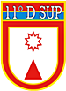

Sobre o 11º D Sup

É uma organização militar diretamente subordinada à 11ª Região Militar com
a missão de buscar soluções mais adequadas para planejamento, o controle e
o armazenamento dos suprimentos.
O 11º D Sup tem as seguintes competências básicas:
-
Adquirir, receber, armazenar, controlar, lotear e distribuir
suprimentos, nas classes I, II, III , V, VIII e IX, para todas as OM
subordinadas ao Comando Militar do Planalto - CMP.
-
Realizar todas as atividades relacionadas ao serviço militar inicial,
adestramento dos Quadros e formação de sargentos temporários.
-
Realizar todas as atividades relacionadas à execução financeira,
contábil e patrimonial.
- Cumprimento de determinações impostas pelo escalão superior.
- Executar o transporte de suprimentos.
volte a Pagina principal